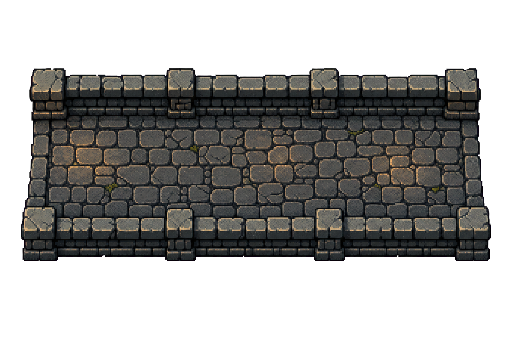
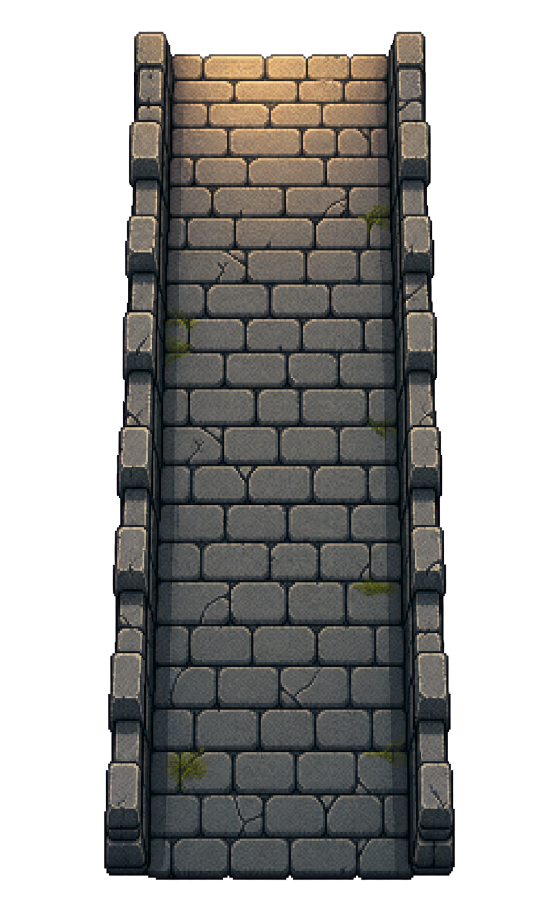

/pandacorp:implement y el esfuerzo se fija ahí. Aquí sirven para previsualizar los estados.


work order activo; rol real implementer (full-stack), uno por WO. Hover = su título.docs/design/components.md → reutiliza/adapta (no duplica).render → compara con el mock → corrige (×≤3) antes de IN_REVIEW.Status Note real: interfaces + decisiones/supuestos; el dependiente lo lee (Build Plan).reviewer, 1 por FRD) abre el gate con todos en IN_REVIEW: 4 lentes (correctitud·seguridad·calidad·runtime/visual) + el juez visual compara captura vs mock y bendice el baseline (DR-055/056).test-writer (RED) → backend-dev (publica su contrato docs/api/<wo>.md) → frontend-dev (lo consume), con modelo Opus. No trabajan a la vez.researcher, designer, architect, PM… viven en otras fases → ver La Campaña.implementer ya no se disfraza de reviewer.